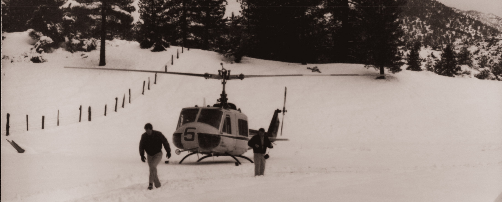
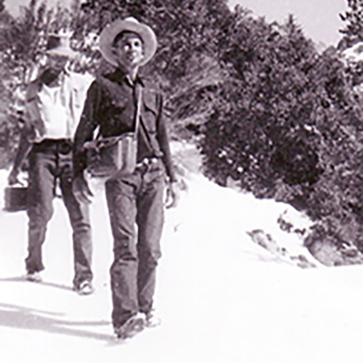
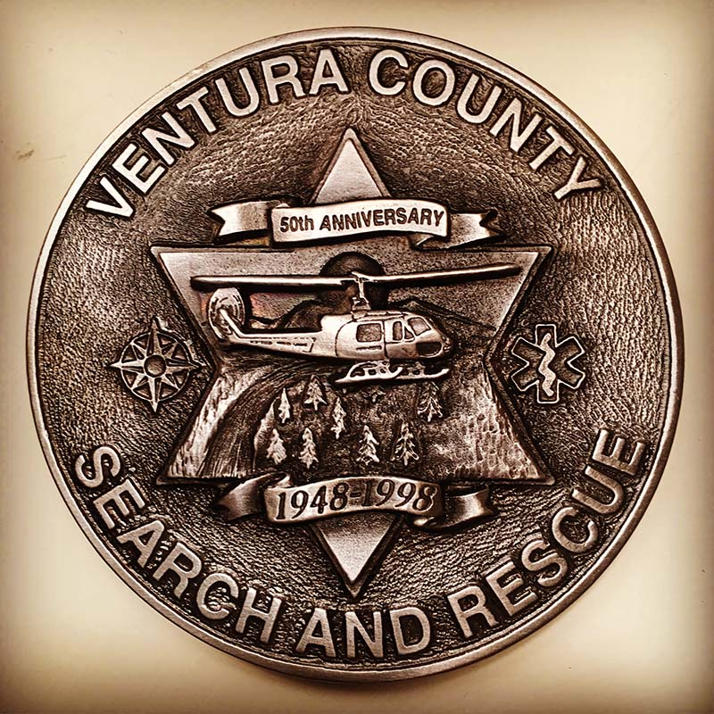
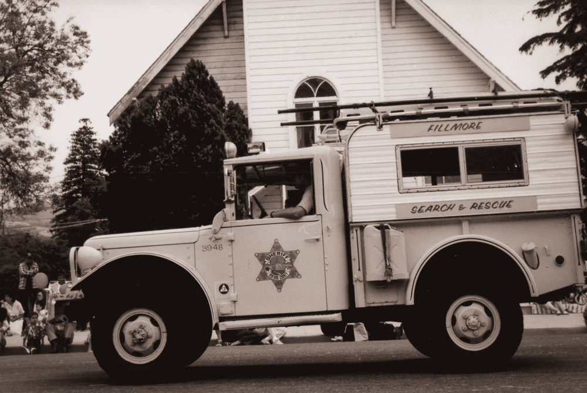
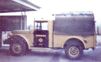
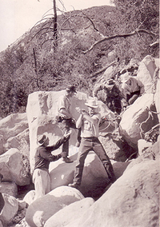
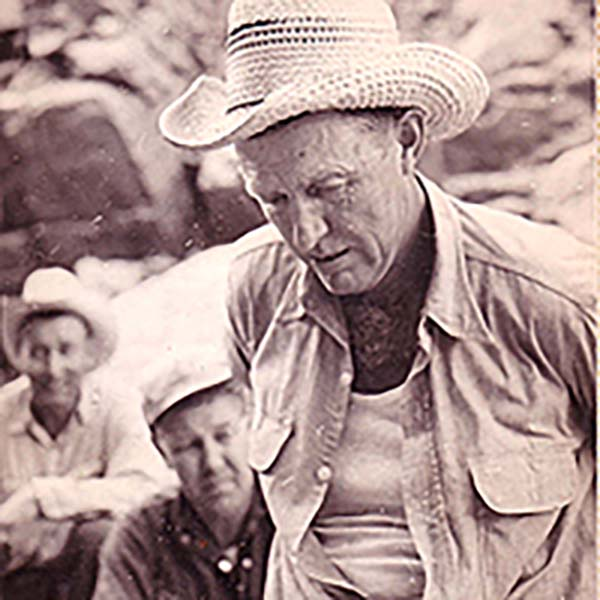

The first Search & Rescue team in Ventura County — born from horsemen who rode out to find their own. Nearly eight decades later, we're still answering the call.


In the mid-1940s, local horsemen would band together to search for fellow cowboys and farmers who were missing or injured in the back country of Ventura County. The Sheriff of Ventura County approached the group, and in 1946 the Fillmore Search and Rescue Team was formally organized and sanctioned by the Sheriff's Department.
That made Fillmore the first Search and Rescue team in the county — the foundation everything since has been built on.
Most searches were conducted on horseback because of the rugged terrain. Where vehicles could be used, members brought their own four-wheel-drive trucks. In the late 1950s, the Sheriff's Department augmented those privately owned vehicles with surplus military four-wheel drives.
When horses couldn't reach a victim, a helicopter would be contracted through Rotor Aids of Ventura — a preview of the air support to come.




In the early 1970s, the Sheriff's Department formed its own Air Unit, and Search and Rescue began to acquire newer vehicles and equipment supplied by the department. The all-volunteer team grew into the modern, professionally trained unit it is today — still based in Fillmore, still first to ride out.
From the Sespe Wilderness to the Montecito mudslides, our team has answered some of the county's hardest calls — with dedication, expertise, and bravery.
When the "Glee" actress went missing during a boating trip with her young son, the Sheriff's Office led an extensive multi-agency search using divers, helicopters, drones, and sonar across Lake Piru.
After heavy rain on Thomas Fire burn scars triggered massive debris flows, rescuers worked unstable terrain alongside fire crews, canine units, and the National Guard to reach survivors and recover victims.
During one of California's largest wildfires, teams worked under dangerous conditions to evacuate residents, reach isolated areas, and run welfare checks — helping minimize the loss of life.
More than 100 rescuers, canine units, and helicopter crews covered over 50 square miles of rugged terrain searching for missing Arcadia firefighter Mike Herdman.
A month-long, multi-agency effort across Wheeler Canyon, Balcom Canyon, and Steckel Park — with the county K9 SAR team playing a crucial role — to bring closure to a grieving family.
These are a handful of the searches and operations our volunteers have answered over the years.
Join the team →Click any photo to view it full size. Decades of training, callouts, and the crews who showed up.